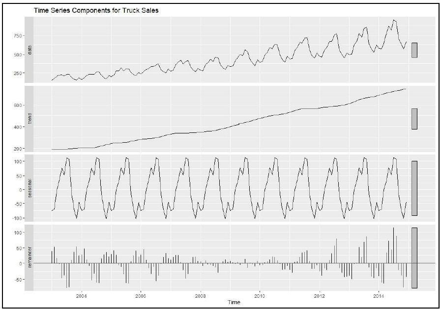

Conduct time series analysis on truck sales data spanning from January 2003 to December 2014. The objective is to forecast truck sales for 24 periods into the future (2015 and 2016) using various time series forecasting models.
The dataset comprises monthly records of truck sales from January 2003 to December 2014, providing a total of 144 observations. The dataset is structured for time series analysis, enabling a thorough exploration of temporal patterns and trends in truck sales.
Data Partitioning: The dataset was divided into distinct training (January 2003 to December 2012) and validation (January 2013 to December 2014) periods to facilitate robust analysis.
The Holt-Winter’s model, identified as the best-performing model, was applied to forecast truck sales for the next two years (2015 and 2016). The forecasted trends indicate a promising outlook for the sales trajectory.
Sales of Trucks
Time Series Components